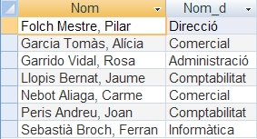
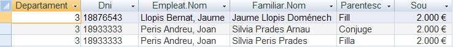
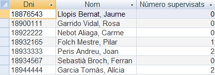

1.2 Consultes
Continueu amb les següents qüestions:
2.1) Construir una consulta anomenada 2.1: Empleats - Sou en Pessetes on tindrem el nom de l'empleat, Dni, sou en euros i sou en pessetes. (1euro = 166,386pts). Aquesta consulta ha d'anar ordenada de major sou a menor.
2.2) Fer una consulta, 2.2: Empleats - comencen per G, on aparega el nom i dni d'aquells empleats que comencen per G.
2.3) Construir una consulta, 2.3: Empleats - Departaments, amb el nom dels empleats i els noms dels departaments als quals pertanyen. Ordenat per nom d'empleat.

Atenció
És més complicada del que sembla en un principi, ja que podeu tenir un efecte no desitjat. Observeu que hi ha d'haver 7 files en total.
2.4) Construir una consulta anomenada 2.4: Empleats - Número de Projectes on tindrem el nom de l'empleat, Dni i número de projectes en els quals treballa, ordenat pel nom de l'empleat
2.5) Construir una consulta pareguda a l'anterior anomenada 2.5: Projectes - Total hores on tindrem el nom del projecte, el número de projecte i la suma de les hores treballades en ell, ordenat pel nom del projecte

2.6) Construir una consulta anomenada 2.6: Familiars dels empleats amb sous mitjans d'un departament, on tindrem número de departament, Dni, nom de l'empleat, nom del familiar, parentesc i sou de l'empleat, ordenat per nom empleat, dels empleats que tenen un sou entre 2.000 i 2.500 €. (ambdós inclosos) d'un departament introduït per teclat (serà un paràmetre). Per exemple, si quan pregunte el departament s'introdueix el 3, el resultat seria:

Nota
Per a posar un paràmetre en una consulta per a que ens demane el valor per teclat, hem de posar dos punts davant d'un nom que no siga com cap camp de les taules que entren en la consulta i que no tinga espais en blanc. Per exemple :Numero_Departament. D'aquesta manera, ens demanarà el valor per teclat.
2.7) Construir una consulta de supervisors, on tindrem els dni i nom de tots els empleats, i el nombre de empleats que supervisa cadascun. Guardeu-la amb el nom 2.7: Empleats - Supervisors.

Pista
Farà falta posar 2 vegades la taula Empleat, una per a traure el nom i dni de cada empleat, i una altra per a poder comptar els que tenen a aquest de supervisor. I mireu que han d'eixir tots els empleats (fins i tot els que no supervisen a ningú, que són als que ix 0)
Llicenciat sota la Llicència Creative Commons Reconeixement NoComercial SenseObraDerivada 2.5